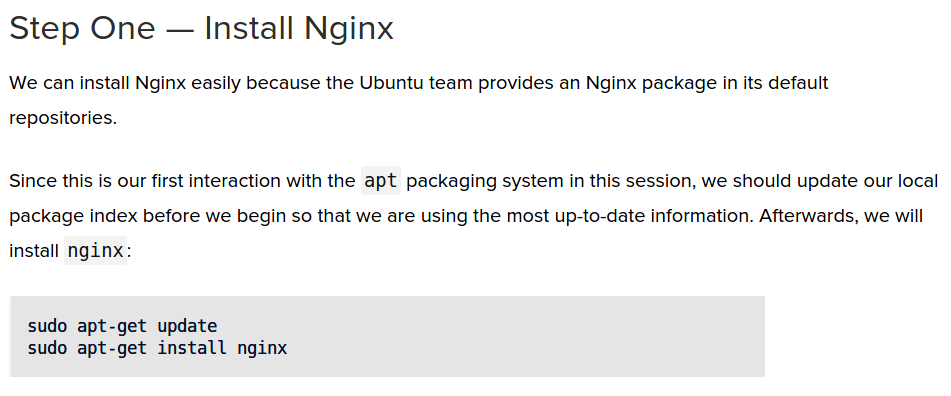
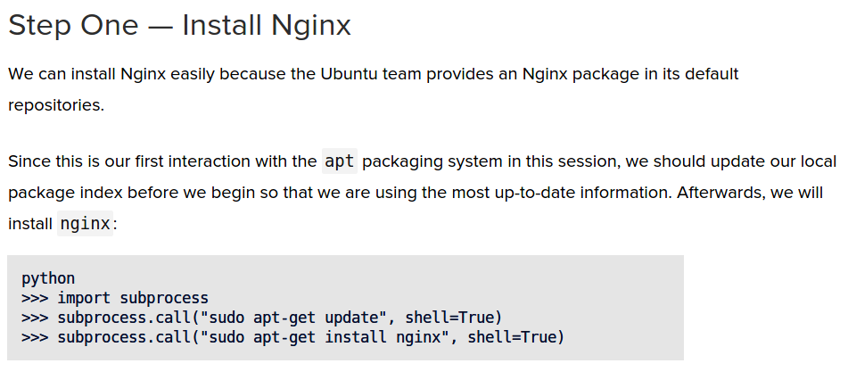

find -type f | xargs -I F basename F
map() {
local fun=$1
local -a vals=("${@:2}")
for val in "${vals[@]}"; do
eval "$fun $val"
done
}
incr() {
echo $(($1 + 1))
}
map incr 1 2 3 4
ci.sh

ci.shinit-project() {
echo "Initialzing project at $project_dir"
$tiger_cmd init-project "$project_dir" "$tiger_template"
}
init-config() {
resolve-config "$config_in" > "$project_dir/tiger.config"
}
init-cluster() {
pushd-quiet "$project_dir"
$tiger_cmd init
popd-quiet
}
def load_server_config(file_name):
config = dna.config.parse(file_name)
if not config:
raise ValueError("Config file not found: %s" % file_name)
return dna.secrets.resolve_config_secrets(config)
def server_name_from_dir(server_dir):
return os.path.basename(server_dir)
def match_servers(pattern, location='.'):
matched_server_dirs = match_server_dirs(pattern, location)
return [load_server(server_dir) for server_dir in matched_server_dirs]
encode_meta([]) -> <<>>;
encode_meta(Meta) -> erlang:term_to_binary(Meta).
date_to_timestamp(Date) when is_integer(Date) -> Date.
maybe_auto_ignore_panic(Key, State) ->
maybe_auto_ignore_panic(key_matches_auto_ignore(Key), Key, State).
key_matches_auto_ignore(Key) ->
key_matches(Key, auto_ignore_patterns()).
ci.shci.sh - part 1#!/bin/bash -ex
# Used for CI Integration Test
PROVIDER=${1/-*/}
VENDOR=${1/*-/}
export CLUSTER_NAME=${2:-tiger-testing}
PROJECT_DIR=$(readlink -f .tiger)
SCRIPT_DIR=$(readlink -f .)
export TIGER_PROJECT_DIR=$PROJECT_DIR
export PATH=$SCRIPT_DIR:$PATH
export DEBIAN_FRONTEND=noninteractive
ci.sh - part 2# Update the DEVELOPMENT tiger-cli Docker image
if [ -z ${SKIP_RELEASE+x} ]; then
pushd containers/cli
make clean
popd
pushd release
./release ./VERSIONS-dev $SCRIPT_DIR
ln -fs $SCRIPT_DIR/tiger-DEVELOPMENT $SCRIPT_DIR/tiger
popd
else
# Use an existing release, TIGER_CLI_VERSION will have to be
# provided by caller
ln -fs $SCRIPT_DIR/containers/cli/tiger $SCRIPT_DIR/tiger
fi
ci.sh - part 2 (aside)update-the-development-tiger-cli-docker-image() {
...
}
ci.sh - part 2 (aside)update-the-development-tiger-cli-docker-image() {
if [ -z ${SKIP_RELEASE+x} ]; then
pushd containers/cli
make clean
popd
pushd release
./release ./VERSIONS-dev $SCRIPT_DIR
ln -fs $SCRIPT_DIR/tiger-DEVELOPMENT $SCRIPT_DIR/tiger
popd
else
# Use an existing release, TIGER_CLI_VERSION will have to be
# provided by caller
ln -fs $SCRIPT_DIR/containers/cli/tiger $SCRIPT_DIR/tiger
fi
}
ci.sh - part 2 (aside)update-the-development-tiger-cli-docker-image() {
if [ -z ${SKIP_RELEASE+x} ]; then
pushd containers/cli
make clean
popd
pushd release
./release ./VERSIONS-dev $SCRIPT_DIR
ln -fs $SCRIPT_DIR/tiger-DEVELOPMENT $SCRIPT_DIR/tiger
popd
else
use-an-existing-release
fi
}
ci.sh - part 2 (aside)update-the-development-tiger-cli-docker-image() {
if [ -z ${SKIP_RELEASE+x} ]; then
i-sure-wish-there-was-a-comment-here-heck-just-do-stuff
else
use-an-existing-release
fi
}
ci.sh - part 2 (aside)update-the-development-tiger-cli-docker-image() {
if skip-release-env-is-not-set; then
i-sure-wish-there-was-a-comment-here-heck-just-do-stuff
else
use-an-existing-release
fi
}
ci.sh - part 2# Update the DEVELOPMENT tiger-cli Docker image
if [ -z ${SKIP_RELEASE+x} ]; then
pushd containers/cli
make clean
popd
pushd release
./release ./VERSIONS-dev $SCRIPT_DIR
ln -fs $SCRIPT_DIR/tiger-DEVELOPMENT $SCRIPT_DIR/tiger
popd
else
# Use an existing release, TIGER_CLI_VERSION will have to be
# provided by caller
ln -fs $SCRIPT_DIR/containers/cli/tiger $SCRIPT_DIR/tiger
fi
ci.sh - part 2 (aside)create-tiger-release-i-think() {
pushd containers/cli
make clean
popd
pushd release
./release ./VERSIONS-dev $SCRIPT_DIR
ln -fs $SCRIPT_DIR/tiger-DEVELOPMENT $SCRIPT_DIR/tiger
popd
}
ci.sh - part 2 (aside)create-tiger-release-im-pretty-sure-with-odd-cli-clean-first() {
pushd containers/cli
make clean
popd
pushd release
./release ./VERSIONS-dev $SCRIPT_DIR
ln -fs $SCRIPT_DIR/tiger-DEVELOPMENT $SCRIPT_DIR/tiger
popd
}
ci.sh - part 2 (aside)update-the-development-tiger-cli-docker-image() {
if skip-release-env-is-not-set; then
create-tiger-release-im-pretty-sure-with-odd-cli-clean-first
else
use-an-existing-release
fi
}
ci.sh - part 4# Upgrade existing cluster
if [ -f $PROJECT_DIR/shared/tiger.config ]; then
mv $PROJECT_DIR/shared/tiger.config $PROJECT_DIR/shared/project.config
fi
# pass on terraform and dna vars with credentials to Tiger cli container
vars=$(env | grep '^TF_VAR_\|^DNA_ENV_' | sed -e 's/=.*//')
export DOCKER_ARGS="$(for v in $vars; do echo -n "-e $v "; done) $DOCKER_ARGS"
echo "Init project: ${CLUSTER_NAME}"''
mkdir -p $PROJECT_DIR
pushd $PROJECT_DIR
tiger init-project --reinit . $PROVIDER
popd
ci.sh - part 5echo "Creating configuration"
# server ip
#ip=$(ifconfig | sed -En 's/127.0.0.1//;s/.*inet (addr:)?(([0-9]*\.){3}[0-9]*).*/\2/p' | head -n 1)
# EC2 public ip
#ip=$(curl -sS ipecho.net/plain)
export EXTERNAL_IP=$(curl -sS ident.me)
pushd $PROJECT_DIR
echo ip is ${EXTERNAL_IP}
CONFIG=$SCRIPT_DIR/ci/$PROVIDER-$VENDOR.config
if [ ! -f $CONFIG ]; then
CONFIG=$SCRIPT_DIR/ci/$PROVIDER.config
fi
cat $CONFIG | envsubst > ./tiger.config
ci.sh - part 6for image in castle cjoc master router elasticsearch
do
if [ -f $SCRIPT_DIR/versions/$image/VERSION ]; then
tee -a ./tiger.config << EOF
[$image]
docker_version = $(cat $SCRIPT_DIR/versions/$image/VERSION)
EOF
fi
done
ci.sh - part 7echo "Setting default credentials"
mkdir -p $PROJECT_DIR/shared
echo "marathon:tiger-admin" > $PROJECT_DIR/shared/marathon-creds
echo "tiger-admin" > $PROJECT_DIR/shared/router-pwd
echo "admin tiger-admin " > $PROJECT_DIR/shared/elasticsearch-creds
if [ -e ./.tiger-initialized ]; then
echo "Running tiger upgrade"
tiger upgrade
else
echo "Running tiger init"
tiger init
fi
export MARATHON_CREDENTIALS=$(cat $PROJECT_DIR/shared/marathon-creds)
echo Marathon credentials: $MARATHON_CREDENTIALS
popd
ci.sh - part 8export MARATHON_CREDENTIALS=$MARATHON_CREDENTIALS
if [ "$PROVIDER" = "aws" ]; then
LOAD_BALANCER_RESOURCE=elb
else
LOAD_BALANCER_RESOURCE=controller-1
fi
export CLUSTER_URL=$(terraform output -state="$PROJECT_DIR/.terraform/$LOAD_BALANCER_RESOURCE/terraform.tfstate" hostname_base)
cat $SCRIPT_DIR/ci/index.html | envsubst > ./index.html
# wait for cjoc
set +ex
export CJOC_PING_MAX_RETRIES=25
for i in `seq 1 $CJOC_PING_MAX_RETRIES`; do
echo "Waiting for tasks to be alive... attempt $i of $CJOC_PING_MAX_RETRIES"
curl -fsSL --user $MARATHON_CREDENTIALS -H "Accept: application/json" http://marathon.$CLUSTER_URL/v2/apps/jce/cjoc/tasks | grep '"alive":true' && \
(! curl -fsSL --user $MARATHON_CREDENTIALS -H "Accept: application/json" http://marathon.$CLUSTER_URL/v2/apps/jce/castle/tasks | grep -q '"alive":false') && \
curl -fsSL --user $MARATHON_CREDENTIALS -H "Accept: application/json" http://marathon.$CLUSTER_URL/v2/apps/jce/elasticsearch/tasks | grep '"alive":true' && \
curl -fsSL --user $MARATHON_CREDENTIALS -H "Accept: application/json" http://marathon.$CLUSTER_URL/v2/apps/masters/eval-master/tasks && \
break;
sleep 5
done
set -ex
ci.sh - part 9# run tests
pushd $PROJECT_DIR
echo "Running tiger check"
tiger check
popd
ci-init-clusterci-init-cluster Overviewci-init-cluster# Header ceremony
...
# Variable definitions + includes
...
# Function definitions
...
init-new-cluster
ci-init-cluster - Header, Vars, Libs#!/bin/bash -eu
# Creates a Tiger cluster from scratch
set -o pipefail
if ${trace:-false}; then
set -x
fi
ci_dir=$( cd "$( dirname "${BASH_SOURCE[0]}" )" && pwd )
. "$ci_dir/ci-support"
ci-init-cluster - Functionsinit-new-cluster() {
destroy-existing-cluster
clean-project
init-project
init-config
init-cluster
test-cluster
}
ci-init-cluster - Functionsdestroy-existing-cluster() {
if can-destroy-cluster; then
echo "Destroying Tiger cluster"
pushd-quiet "$project_dir"
$tiger_cmd refresh-project 2> /dev/null
$tiger_cmd destroy -f
popd-quiet
fi
}
can-destroy-cluster() {
test -e "$project_dir/.tiger-project" -a \
-e "$project_dir/.dna-project" -a \
-e "$project_dir/servers/tiger"
}
ci-init-cluster - Functionsinit-project() {
echo "Initialzing project at $project_dir"
$tiger_cmd init-project "$project_dir" "$tiger_template"
}
init-config() {
resolve-config "$config_in" > "$project_dir/tiger.config"
}
init-cluster() {
pushd-quiet "$project_dir"
$tiger_cmd init
popd-quiet
}
test-cluster() {
pushd-quiet "$project_dir"
$tiger_cmd check default
popd-quiet
}
#!/bin/bash -eu
project="${1:?usage: $0 PROJECT}"
scripts-dir() {
echo "$project/scripts"
}
echo "Scripts dir is $(scripts-dir)"
some-list() {
echo 1
echo 2
echo 3
}
do-something() {
echo "Got $1"
}
some-list | while read x; do
do-something $x
done
is-filename() {
if [[ "${1:?}" =~ "/" ]]; then true; else false; fi
}
is-file() {
test -e "${1:?}"
}
set -e
set -u
set -o pipefail
foo() {
local required="${1:?}"
local optional="${2:-default}"
local watch_out_for_me="$(something-that-might-fail)"
local safe_form
safe_form="$(something-that-might-fail)"
}
foo() {
_arg1="hello"
bar
echo "_arg1=$_arg1"
}
bar() {
_arg1="bye"
# Do something with _arg1
}